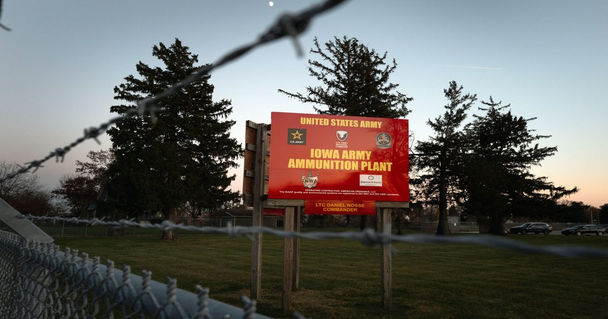

Армия США готовится к взрыву азида свинца в Айове: жители узнали из пресс-релиза
Армия США планирует контролируемый взрыв 9500 фунтов деградировавшего азида свинца на заводе Iowa Army Ammunition Plant. Местные власти и жители узнали о масштабе операции и потенциальных рисках лишь из официального пресс-релиза, опубликованного за несколько дней до запланированной даты. Отсутствие раннего оповещения вызвало волну тревоги и судебные споры накануне праздника Дня благодарения.
Хронология событий: от письма мэру до судебного запрета
В конце октября мэр Медиаполиса Чарльз Масснер получил электронное письмо от армии США с уведомлением о предстоящем «намеренном, контролируемом взрыве» количества деградировавшего азида свинца на военном заводе в двадцати милях к югу от города. В письме не было ни даты, ни объема вещества, ни инструкций по защите населения от возможного токсического осадка, зато содержалась просьба разрешить экологические замеры на общественных землях, что городской совет одобрил на заседании второго ноября. Следующее официальное сообщение поступило только пятнадцатого ноября — в виде пресс-релиза на сайте армии, объявившего о взрыве через несколько дней.
Пресс-релиз включал карту потенциального заражения: Медиаполис оказался прямо в траектории красновато-желтого облака с ярко-розовой границей. Губернатор штата Ким Рейнольдс и ее администрация узнали о планах именно из этого документа, так же как и мэр, и как и большинство жителей штата. Ситуация обострилась, когда, несмотря на судебный запрет, армейское командование в воскресенье вечером подтвердило намерение провести детонацию в среду, за день до Дня благодарения. Президент Трамп заявил о приказе не взрывать ничего без суда, но позже уточнил, что подчиняется апелляционному процессу.

Риски для здоровья и экологии: мнение экспертов
Шестьдесят восемь бочек с азидом свинца хранятся на базе в Мидлтауне уже более двадцати лет; в марте этого года материал официально признан опасным отходом, и начался поиск способов утилизации. По судебным документам, армии известен «непосредственный риск» самопроизвольного взрыва при падении температуры ниже тридцати градусов по Фаренгейту, что и послужило основанием для обращения к чрезвычайным полномочиям и установления жесткого дедлайна в двадцать четвертое ноября. В официальной позиции ведомства контролируемый взрыв представляется безальтернативно более безопасным вариантом по сравнению с непредсказуемой детонацией.
Профессор Торн, бывший председатель научного совета EPA, отмечает, что ожидаемая доза свинца от контролируемого взрыва, вероятно, будет значительно ниже уровней загрязнения в зонах исторического промышленного наследия. Однако он подчеркивает: безопасного уровня свинца для организма не существует, особенно для маленьких детей. Лаборатория университета получает десятки обращений от педиатров, родителей и представителей клининговых компаний, которые опасаются за здоровье сотрудников и собственных семей. Эксперт называет произошедшее примером худшей практики информирования общественности с точки зрения общественного здоровья.

Альтернативы, которые не были использованы
Армия действительно рассматривала иные сценарии утилизации опасного груза. По данным New York Times, в конце марта был заключен контракт с частной компанией по очистке территории от химикатов на месте, однако через два месяца договор расторгли без объяснения причин. Контрактный офицер армии подтвердил, что решение о переходе к детонации не основывалось на недостатках научного подхода подрядчика. Это вызывает вопросы о том, почему был выбран самый радикальный и тревожный для населения вариант.
В письме губернатору Рейнольдс администратор седьмого региона EPA перечислил стратегии, которые ведомство изучал вместо взрыва, включая химическую нейтрализацию. При этом отмечалось, что любой способ вмешательства в нестабильное вещество несет риск случайного взрыва. EPA узнало о критическом состоянии азида только в марте, хотя бочки лежали на складе десятилетиями. Отсутствие долгосрочного плана мониторинга и утилизации стало одной из ключевых причин текущего кризиса.
Проблемы коммуникации и доверия к властям
Несмотря на проведение публичных встреч в Мидлтауне, где находится полигон, и рекомендации по временной эвакуации для нескольких районов, армия не расширила прямую рассылку по вопросам здоровья на города в зоне потенциального осадка, такие как Медиаполис. Запрос на замеры почвы не заменяет полноценный диалог с населением о мерах предосторожности и путях эвакуации. Мэр Масснер признает, что карта из пресс-релиза, закрашенная красным цветом, вызвала панику: люди увидели угрозу над своими головами и восприняли это как сигнал к немедленному бегству.
Профессор Торн описывает стандарты качественной общественной работы: необходимы открытые заседания, сессии вопросов и ответов, подробные FAQ, сравнение альтернатив с оценкой издержек и выгод, а также распространение информации через разнообразные каналы. Ничего из этого не было сделано в полном объеме. На фоне смены дат взрыва и противоречивых заявлений политиков жители остаются одни на один с неопределенностью, планируя поездки на праздник и решая, оставаться ли дома или уехать в безопасное место.
Текущий статус и нерешенные вопросы
На момент публикации решения апелляционного суда все еще ожидается, а армия сохраняет готовность к проведению взрыва в среду. Моделирование осадка для новой даты не опубликовано, и направление ветра может сместить зону риска, исключив Медиаполис или вовлекая новые населенные пункты. Местные чиновники чувствуют себя беспомощными: им приходится действовать на основе пресс-релизов, не имея прямых контактов с военными планировщиками. Это подрывает веру в систему гражданской защиты на региональном уровне.
История с азидом свинца в Айове демонстрирует, как отсутствие прозрачности и своевременного вовлечения сообщества превращает техническую операцию в социальный кризис. Даже если взрыв пройдет без инцидентов, ущерб доверию между федеральными структурами и местным населением уже нанесен. Жителям остается лишь ждать решения суда и следить за ветром, не имея гарантий, что в будущем подобные решения будут приняты иначе.
Коротко: Армия США планирует взрыв 9500 фунтов азида свинца в Айове, уведомив власти и жителей лишь за несколько дней через пресс-релиз. Судебный запрет проигнорирован, альтернативные способы утилизации отвергнуты без объяснения причин, а коммуникация с населением в зонах риска признана экспертами провальной.
Как вы считаете, достаточно ли текущих механизмов информирования населения о технологических рисках в вашем регионе?